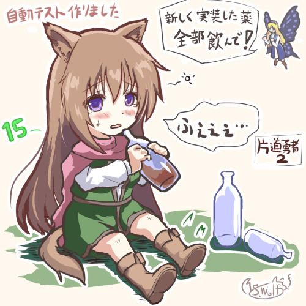

■
2023-11-25 (土) 片道勇者2開発+11 自動テスト機能搭載▼
ようやく久しぶりにフリーになれましたので『片道勇者2』の開発再開です！
もう40日以上ぶり！
しかし久しぶりに触ると分からないところだらけになっていて
恐ろしいほどシステムいじりに億劫になってしまっているので、
まずはリハビリ、兼、土台固めとして、
放置されていた山ほどのバグ修正からやっています。
それと本格的なデータ作りに入る前に、
今回からやってみようと思っていた
「自動テスト機能」の搭載も進めてます！
ゲーム開発者の方も見てるでしょうから
今回はその自動テスト機能についてお話をしましょう。
※自動テスト機能で「新しく作ったアイテムをまとめて使わせる」といったこともワンキーでできるようになるので手軽！

◆片道勇者2 自動テスト機能
【その前に 手動テスト機能の話】
自動テストの話の前に、実は『片道勇者』には
前作にもテスト時用のデバッグ機能が用意されていて、
「指定した好きなアイテムを入手できる」とか
「好きなNPCを前に出す」といったことができていました。
なので、手動でテストをすること自体は何も問題なかったんですよ。
が、なんせデータ数が多く、まとめてテストするときに
一つ一つ選びながら全部手動でやり直すのは意外に大変で、
集中力を消耗します！
指定の要素を探すだけで5～10秒くらいかかるときがありますし、
それが面倒臭くなってテストへの心理的ハードルが
気付かぬうちに上がってしまっていたことも多々あります。
なので手動のデバッグ機能も十分以上に役に立ってはいたのですが、
私は「ゲーム開発」という長期戦でテストへの心理的ハードルが
上がるのはなるべく回避したいと考えていました。
【自動テスト機能の搭載！】
そこで今回思い切って作ることにしたのが「自動テスト機能」！
たとえばtxtファイルに「目の前にゾンビを出現させて」
「油ビンを取得して投げて」「炎の巻物を取得して使って」
といったコマンドを指定しておけば、
キーボードからワンボタンで一連の動作をやってくれます！
このケースなら、油による炎ダメージ補正がかかっているかチェックできます。
そんな風に一つのシナジーをチェックする目的で使うときもあれば、
別のtxtファイルに
「アイテム1～999番までそれぞれの使い方で使って動作チェックする」とか、
「全ての敵を順番に呼び出して『炎の巻物』を
1回ずつ喰らわせて炎耐性のダメージチェックする」
「全NPCを順番に呼び出して友好化して会話の流れを全部出力」
みたいなことを書いておいて、定期的にテストするといったこともできます！
今のところ作った自動テスト機能は「アイテムの取得＆使用」や
「NPC設置」くらいですが、さらに機能を増やせば、
「街やダンジョンを何度も作り直してNPC出現頻度の肌感覚を知る」
「1000km地点の砂漠地形の設定でランダムなマップを作ったり、
その地域設定で敵やアイテムを出しまくる」
みたいなランダムテーブルのチェックもできそうです。
まあ2つめの方はランダムテーブルリストを
見やすく表示するようにすればそれで済むことですけども！
※以下は最強のゾンビを配置→火炎ビンを投げる→
燃料油のビンを投げる→火炎ビンをまた投げる、という手順をワンキーで実行するテスト。
燃料油で火炎ダメージ3倍になってるか試しています。
こうした『自動テスト機能』、テキストファイルに指示を書く手間は
ありますが、ローグライクみたいにランダム要素で
相乗効果だらけのゲームを作ったり、
低確率で起きる問題を再現するために
ひたすら試行しまくることが求められる状況では
力強い友になることでしょう。
前作ではデバッグやテスト周りで地獄を見たので、
今作ではもっと効率良くできるよう意識していきたいです！
前作は地獄のバグをいっぱい出して大変なことになってしまったので、
今回は少し時間がかかっても処理の見通しをよくすることと、
何日か使ってもいいのでデバッグ力やデバッグ速度を
高めつつ進めることを意識していきたいと思います。
ということで引き続き『片道勇者2』開発、がんばっていきます！
以下はいただいた気になった拍手コメントです！ いつもありがとうございます！
>最近過去の記事を見て思い出したんですが、以前販売していた
>メタルストラップの再販とかはないんでしょうか？ .
>今更になって欲しくなってきました… .
申し訳ございませんが今のところ再販の予定はありません。
もとより他のサークル様への外注として作ってもらったものなのもありますが、
今だと作るコストがそのときに比べて激増してたり、
一度に作る量が多い発注方式だったりして再販しにくいっぽいので、
次に何か作るならもうちょっと小さいロット（単位）で
発注・再販しやすそうなグッズも考えてみたいと思います。
（メタルストラップはお金出してまず型から作ってもらわないとダメですし、
その型もそんなに長く置いてもらえないみたいです。過去に作ったのはもうなさそう）
と思って調べたら手軽そうなアクリル製のグッズなども作成コストが
かなり上がったみたいでびっくりしています！ 円安ー！！■
2023-06-24 (土) 片道勇者2開発+6 ギルド依頼や新機能▼
みっちりやらせていただいております！
が、やっぱりローグライクのデータ作りってすごい時間かかる！！
たとえば思い出してください、『不思議のダンジョン』シリーズのアイテムって
【1個1個それぞれ専用のプログラム】で動いてる処理も多いわけで、
個性的なデータ1個を作ろうとするだけで思った以上のコストがかかってしまうのです。
『片道勇者2』では全カードの処理をスクリプト化したりすることで
なるべく少ない機能で応用の利く造りにしたつもりですが、
それでも作成コストは高めだということを思い出させられました。
なるべく効率を上げられるところを見つけつつ、
気持ちをくさらせずペース維持して作っていこうと思います！
【引き続き施設やNPC作成！】
前も言いましたがここからずっと「施設やNPC作ったぞー！」という話題で
開発日誌が埋まると思います！
ということで今回ご紹介するのはこちら！
◆旅人ギルド員
旅人ギルド員はランダムで依頼をいくつか提示してくれるNPCで、
プレイヤーはそのうちの1つの依頼を受注することができます。
依頼をこなすと『レアなスキルが確実に手に入るクリスタル』をもらえたり、
『次元の金貨』をいっぱいもらえたりします。
今回搭載した依頼は以下の通り！
【アイテムの配達任務】
『ギルドの配達品』というアイテムを一定距離先まで運ぶ依頼です。
指定日数以内に運べればおまけで貴重なアイテムももらえます。
何を運んでいるかは教えてもらえませんが、途中で襲ってくる盗賊団はなぜか中味を知っています。
そしてまた、『ギルドの配達品』の中にはなんらかの貴重品が入っており、
重犯罪者にされることを覚悟するなら途中で開けてしまうこともできます！
輸送依頼中に「輸送中の荷物」を奪ってしまいたいあなたも安心！
ギルドからの信頼を得た状態でこの任務を受注したなら、
なんと「聖なる武器」や「聖なる防具」が入っている場合もあります。
【NPCの護衛任務】
協力NPCとして1人のNPCがついてきます。
それを守りながら一定距離先まで行ければ報酬が手に入ります。
前作の『片道勇者1』でも要塞地形などで捕まっている人を脱出させて、
次の地形まで連れていけばお金がもらえる、という展開がありましたが、
ゲーム的に割と面白そうな任務の割にあまり発生しなくてもったいなかったので、
今回は発生率を上げてドキドキさせていきたいですね！
もちろん途中で魔王とも遭遇するので思ったより緊張感がありました。
たぶん一番キツいので護衛任務は他よりも距離を短くしたほうがよさそうです。
【敵地での回収任務】
指定地点に行き、敵を倒して遺体から何かを回収するというミッションです。
要するにほぼ戦闘任務ですが、「回収」さえできれば敵と戦う必要はないので、
付近の地形や、地形変化系のアイテムをうまく使えば戦闘を避ける工夫もできます。
ただし対象からブツを見つけられるかどうかはクリティカル率依存の
確率判定になっていて、クリティカル率が低い場合は数ターンかけて
チャレンジしなければならないことがあります。
（失敗するごとに+20％などの累積補正がかかります）
これによって、単純に敵の横を強引にすり抜けて回収対象に
タッチするだけでは達成がやや難しいので、あともう一工夫が要求されます。
といっても出てくる相手は、強い職業ならリソースを吐けば
普通に勝てる程度の敵になっています。
といった感じの依頼を作成しました！
中にはちょっと急ぎめに行った方がお得だったり、
余計なところを回るほどリスクが上がる依頼もあり、
「ゲーム的に先を急ぐ場面もいくらか生まれるといいなー」
という意図で搭載されています。
だいたいのローグライクは
『（食料なども加味して）限界までゆっくり行くことが最適解になりがち』
なので、たまには急ぐ方が最適解になる場面も作って
いつもと違う味を楽しんでいただきたい！ と考えています。
しかしこういう意図だと、ときどきランダムイベントで
「150km先の地点で物資の配給をやっておりますぞー！ XX日目になるといなくなるのでお早めに！」
みたいな展開が発生しても面白いかもしれませんね。
うまくバランスが整えられれば、
『なるべく期限内に着くようにしつつ、可能な範囲の探索も行うことが最適解になる』
という、思考量が上がる悩ましい展開が楽しめそうです。
（全部無視して配給地点まで直進してもいいけれど、
それはそれで探索量がちょっと減るので最適解ではなくなります）
【細々とした機能の搭載】
ネタをかさ増しするために今回搭載した機能の紹介も入れていきます！
◆レア度別にカードを抽選して1つ選べる機能！
特定のランダムテーブルから一定以上のレア度の
カードだけ抽選して選ばせる機能を搭載しました！
「いやこれくらい入れて当然でしょう」って感じの処理でしたが
まだ作られていませんでした。
これでゴールドレア（ランク3）以上のアイテムだけ出すとか、
レジェンドレア（ランク4）以上のスキルだけ出すみたいな処理を
実現できるようになったので、上位スキル3つから1つを選んで覚えられる
『スキルクリスタル[ゴールドレア]』みたいなのも実装しました！
特別な仕事の報酬として手に入ると喜べそうです。
◆近付くまで動かない敵！
前作の『片道勇者1』では「近付くまで動かない敵」というのは
実装されていなかったので、ダンジョン内であろうがいつであろうが
敵はみんなウロウロしてましたが、2では動かない敵が搭載されます！
これで何ができるかというと、「女の子を囲んでいる山賊集団」みたいなイベントが作れます！
前作だと、仮に上のイベントを作って各キャラを出現させても
山賊が勝手にどっかに行ってしまうので、さっき倒したか
奥に行ってるかもしれない山賊らに対して女の子が
一人でおびえてるシーンにしかなりませんでした。
＜昼夜によって敵の活発さを変えてみる？＞
あとこの「じっとしてる敵」機能を実装してみて思ったのが、
ダンジョン内の敵も近付くまでじっとしてる（寝てる）ように
したらどうかなと考え中です。
敵が集まりにくいと、ダンジョン外からの攻撃の効果が下がって
面白くないとかあるかもしれませんが、
「時間帯に応じて一部の敵は寝てる」などにすると、
たとえば「昼間のダンジョンだとゾンビやガイコツが寝てて
宝箱まで壁を空けて直進しやすくなる」みたいに
忍び込みやすさが上がって、それはそれで面白いかもしれません。
前作だと、昼でも夜でも視界の差くらいしかなくて
昼夜の差があまり差別化されてませんでしたしね！
◆敵のリンク反応機能！
敵1体に気付かれると、「同じ出身」=「同じ施設内で出現した他の敵」が
一斉に反応するという処理を搭載しました。
上の「近付くまで動かない敵」の集団に対し、
端から1体ずつ気付かせて各個撃破されるという
不自然すぎる問題があったので実装されました。
誰かが気付くと、「「「敵だー！」」」みたいな感じで一斉に反応するので
ちょっと自然な感じになりました。
といった感じで、これ以外にもいろいろ地道に実装中です！
NPCもシステムも、面白みを感じられそうな要素はどんどん入れていきたいですね！
以下のおまけ内容は『急ぐ方がお得になる場面も入れたい！』です！
気になる人はぜひ続きをどうぞ！！ ▼追記を開く▼
【おまけ ゲーム開発話『急ぐ方がお得になる場面も入れたい！】
ローグライクもそうですが、普通にゲームを作ると
「とにかくゆっくり行く方が最善になる」という場面が多くなりがちです。
たとえば多くのダンジョンローグライクRPGは、食料が許す範囲で、
今いるフロアでいっぱい経験値やアイテムなどを稼ぐ方が有利になりやすくなります。
といいますか無限稼ぎができないように
食料の制約が設けられているといった方が正しいでしょう。
また、他にこの「ゆっくり行くのが最善」問題が目立ちやすいのが「戦術シミュレーションゲーム」！
ここでは一例として、グリッド（マス目）上で戦うSRPGを考えてみましょう。
SRPGでは、何の制限もない状況なら戦術的には
「じりじり進んで敵を1体ずつ釣ってみんなで倒し、また1体ずつ釣る戦い方」
がおそらく最も安全な戦法で、『最適解』と言えます。
とはいえ、そればかり通用する場面ばかりだと、
プレイヤーのやることが単純で飽きが早くなってしまいます。
ときどきは1体釣りでなく数体同時釣りをするスピードが求められる、
つまりたまには『急いだ方が最適な場面がでてくる』方が、
ゲームの遊びの幅が広がり、緊張感も出てゲームがキュッと引き締まることでしょう。
なので、よくできたゲームはメリハリを付けるために、
「いかに自然に急がせるか」という意図で様々な工夫が取り入れられています。
たとえば最近も新作が出た『ファイアーエムブレム』シリーズでは、以下の工夫がされています。
●A.戦場マップ上に何かがもらえる「村」があり、ゆっくり進んでいると賊や魔物に村を破壊されてしまう。
●B.建物マップの奥まった場所にアイテムが入った「宝箱」があり、盗賊がそれを奪おうとしている。
●C.仲間ユニットが遠くにいて、早く救助に行かないとやられてしまう。
●D.まともに戦ったら対応不能なほどの量または質の「増援」が出てくる。
こんな風に『ファイアーエムブレム』には
『急いだほうがお得な（あるいは急がないと敗北する）場面』がたびたび用意されており、
「超安全にゆっくり戦うより、負けない範囲で速く進む方が最適解になる」
という変化を産む仕組みが導入されています。
前の2つのA、Bは『速く進ませる引力』として非常に優秀で、
最悪、宝などが全部取れなくてもクリア不可能にはならないだろうと
分かっていても可能な限り急ぎたくなります。
その状況では、「宝が取れて」、「こちらも致命的な被害を出さない」
程度に急ぐのが『最適解』になるわけですからね。
C、Dの「急がないと仲間がやられる/ゲームオーバーになる」ほど
強制力のある急がせステージはごく限られていますが、
「最高の急がせ度」になります。たまに来ると緊張感がすごくてドキドキします。
このように「急ぐことが有利になる」要素があると、
『ひたすら慎重に進む』プレイから、
『必要な慎重さを維持しつつ要求を満たせる速度で進む』ことが
最適解に変わり、【判断重視プレイヤー】向けのゲームとして
より高度なプレイングが求められてアツくなります！
また、注視すべき点として、A、Bのような「急いで手に入る追加報酬」には
「攻略に致命的な影響が出るほど強力すぎるもの」は
基本的には入っていません。
『なくてもクリアできるけど手に入ると十分喜べる程度のもの』
が望ましいはず！ こういったバランスもよく考えるべき点です。
ちなみに「急いで手に入る追加報酬」の類例として
「一定以上早く行くとルートが変わる」という
戦術シミュレーションゲームも結構あります。
プレイヤーのうまさに応じてさらに過酷な上位ルートに導いたり、
そうでなければ簡単ルートに誘導したりもできるので、
これも一つの面白い造りだと思います。
＜片道勇者はどうなっているか＞
『片道勇者』の場合は、すでに強制スクロール自体が
前述Dのような『急がないとゲームオーバー』という急がせ要素になっています。
ですが、それだけだとペースがほぼ一定で、やっぱり慣れてしまいます。
そこに前述のギルドの依頼などを使って、前述ABのような
「さらに適度に急ぐことで資産がより増えるよ！」
という引力も作って急がせ具合を変えることは、
ゲーム中の最適行動を揺らがせるためのいい手段だと考えています。
ゲームとして「最適な行動が状況によって変わる」と、
「判断重視プレイヤー」的に面白くなります。
職業はどうか、仲間がいるか、地形的に戦いやすいか、
手持ちのリソースはどうか、急いだ方が有利な場面か……
様々な状況を加味して適切なアクションが変わるのが、
考え甲斐があるすばらしいゲームです！ 判断重視プレイヤー的には！
とはいえ、全部の場面で最適行動を取り続けないと
クリアできないほどのゲームはガチすぎて私もつらいので、
救済要素として「リソースをためてゴリ押しできる」要素があるのは
自分的にもありがたいと思っています！
それは『片道勇者2』でも残していきたい部分ですね。
＜余裕のある時間制限は『緊張感を増す』ためだけにも使える＞
こちらは「急がせ要素」だけど、最適解自体は
そんなに変わらないゆるいバランスでのお話です！
項目名の通り、『甘めの時間制限』のようなゆるい急がせ要素は、
「真剣に遊んでもらうため」だけ使うこともできます。
たとえば15日間というゲーム内時間制限がある
私のRPG『シルフェイド幻想譚』もそうなのですが、
「ゲーム開発者側には余り気味だと知っている時間制限」
を用意することで、プレイヤーに対して
「ちょっと急ぎ目に行かないとまずそう」という雰囲気を出すことができます。
でも実はこのゲーム、初見でも5～7日目くらいでクリアできる人が多いので、
2～3倍くらい時間に余裕があります。
「なるべくいつも最適解を考えて行動してもらいたい！」
と開発者のあなたが思っている場合は、こんなほぼフレーバー的な
時間制限を搭載するだけでもいいスパイスになるはずです。
他にも、TRPG(テーブルトークRPG)のシナリオを考えるときのコツとして、
余り気味でもいいので「時間制限」あるいは「時間がなさそうな雰囲気」を
出していくべきだ、というのは、色んなシナリオ作成アドバイスの中で挙げられています。
じゃないとホントにゆるゆるな雰囲気になってしまうことが多いんですよ！
「何日あるか分からないけど、あと数日で邪神復活の儀式が行われてしまう！」
でもいいので時間がまずそうなことを伝えるだけで、
遊び手の人が真剣にシナリオに集中してくれることが多いです。
こんな風に、『時間制限』もとい『急がせ要素』は、
その時間的難易度がゆるくても
『最適解を考え続けてもらいたいゲーム』に非常にマッチします。
もしご自分のゲームがそういった作品でしたら、
ガチめな時間制限じゃなくてもいいのでぜひ「急がせ要素」の導入をご検討ください。
ちなみに、こういった「急がせ要素」の問題を挙げるなら、
「そこまで急がなくていいんだよ～」って伝える部分も作らないと
心理的にまったく無駄行動ができなくなることです。
無駄行動という概念が元々あまりないローグライクやシミュレーションゲーム、
無駄行動をして欲しくないTRPGならいいのですが、
フィールド探索を行えるRPGだと「今日はここまで進めばOK！」
「この辺探索しても間に合うよ！」みたいな指標がないと
探索する心の余裕がなくて辛くなるので、
必要そうならそういった配慮もぜひセットで考えてみてください。
時間制限は
「（ゆっくり行くのが最善のゲームに対して）一時的に最適解を変える」
ためにも、「緊張感を生む」ためにも使えます。
時間制限がキツすぎたり、使い方次第ではストレスになることもあるので
扱いには注意が必要ですが、適切に使えばすばらしいスパイスになります。
「時間制限」や「急がせ要素」は、いつも頭のすみに置いていきたいと考えています。■
2023-06-10 (土) 片道勇者2開発+5 妖精パワー仮搭載 ＆ 施設やNPC実装中▼
ウディタも週一日くらいを修正日に回せば何とかなるくらいの
更新頻度になってきたのでようやく落ち着いて開発できます！
と思ったら自宅の介護事情の過酷さが増してきてパフォーマンスがやや落ち気味です。
夜中の1～6時の間に2回起こされる日が続いたりするので思ったより大変ですね！
これが介護生活！ うまいこと工夫していきたいと思います。
◆片道勇者2 妖精パワー（仮）実装！
前作のアドバイザー妖精イーリスは、
地形や基本システムの情報を教えてくれたり、
隠し仲間として戦闘に参加したりしてくれる機能がありました。
が、今作の妖精クリスはお話が進むと
もっと直接的に支援してくれます！
その名も「妖精パワー」（仮）！
※画面は開発中のもので、表示されている内容も仮のものです。
「妖精パワー」は100kmごとにパワーが1点ずつたまり、
それを消費することでいつでも力を発揮できるというものです。
パワーの最大値は5点くらいの予定で、一例として以下の種類を検討しています。
●妖精の偵察
一定ターン、周辺マップが表示され、全ての施設名が判明します。
また、夜間の視野が広がります。
「自家製」片道勇者TRPGだと、妖精キャラが
空から周辺監視する場面がありましたがそういうイメージです。
●妖精の元気回復
疲労で減少した「最大ST」が回復します（疲労すると最大STが下がる）。
なお、減った最大STは食料アイテムでも回復可能です。
これは食料にめぐまれないときのサポートです。
でもさすがに上のスクリーンショットみたいに
最大ST「全快」だとゲーム後半時の回復効率が
高くなりすぎるので固定ポイント回復になりそうです。
●妖精のあふれる元気
「パワーが満タンになるたびに何かに使わないともったいないから面倒なんだけど！」
というのを避ける目的で、パワーが満タンになっている間だけ
何らかのボーナスが発生するようにしたいと思っています。
今はザツに「ちょっとした攻撃力アップ」としていますが、
他にうまくハマりそうなアイデアがあればそれにしようと思っています。
もし弱いクラスにとってこの少しのブーストが必須になったりすると
「能力を使わせない圧」が上がりすぎてあんまり面白くないので、
「ジワジワ役に立つけど『失うのが惜しくない』程度の満タン能力」
くらいの立ち位置を目指す必要があります。
もしこれが強力すぎたら、他の能力は一切使われないでしょう。
能力1つ取っても効果をうまく設定するのは難しい！
という感じのを色々入れる予定です。
これら「妖精パワー」はゲーム中、運によって左右される部分を
ある程度カバーする目的で搭載されています。
たとえば、食糧不足になってもあと一定距離進むことで
確実に何とかできるチャンスがあるならもうちょっとがんばれるかもしれません。
この能力はそうやって、「進んだ距離」を「確定で手に入る何か」と
交換できるようにすることでちょっとした希望を持たせられないかなあ、
という意図で仮採用されました。
が、実際に運用してないので効果は不明です！
でもうれしいのはうれしいですよね。
ポイントを消費して仲間がサポートしてくれるシステムは、
『シルエットノート』という私の過去のゲームにも
似た感じのものがありました。
仲間は複数種いて、中には敵の行動が見える能力なども
あったのでけっこう有用でしたね！
そんな風にサポートキャラを切り替えられたりするのも面白いかもしれません！
が、今のところ開発コストの都合で、別のサポートキャラは考えていません。
ただ、今後拡張できるかもしれないので、妖精キャラを別キャラに
差し替えられるようにする準備はやっておこうと思っています。
◆NPCと施設の追加中！
今回はNPCと施設を追加していました！
施設とNPCはとんでもない作業量があるので
たぶんここから10回分くらいずっとこれを言い続ける気がします。
『片道勇者』のステージ内容は、
「ランダムマップの基礎部」の上に「施設」とその中の「NPC（敵を含む）」が
乗ってる感じなので、これらは「ゲームの課題」のコア部分と言えます。
今回は本作で新登場の施設を1つご紹介！
【闘技場】 ※マップチップなどはまだ仮です。紫のは壊せない壁。
闘技場！ 強力な敵部隊と戦って勝てれば報酬がもらえます。
といいつつ、倒さなくても宝は取れます。宝箱は敵を倒していなくても、
3ターンかければ開けることができます。弱いクラスでも工夫すれば入手可能！
もちろん手クセが悪い「冒険家」クラスならもっと素早く開けられるでしょう。
（ちなみに石柱は脱出用のワープポイントです）
前作のダンジョンは、
「ほどほどの敵がいてほどほどのお宝が出てくる」
というケースが非常に多く、
「もっと強い敵がいっぱいいる代わりに、もっと良い品ばかりが手に入るチャンスが欲しい！」
というご要望も頂いておりました。
『闘技場』はその要望にお応えする一つの形で、
味方の施設でありながら戦闘で貴重なお宝を入手できるチャンスとなっております。
他にも、「敵が強いことが外から分かる高難度ダンジョン」など、
普通のダンジョンも入れていくつもりです。
ただ『片道勇者』というゲームは「勝てる敵」が全くいない場合は
ダンジョンが完全にプレイ上の無駄イベントになっちゃって
何も実りがないので、その点ちょっと悩みどころです。
前作は「外縁部は普通の敵で、内側に強力な敵が配置されている」
というダンジョンがあって、意図せず「どこまで攻めるか考えさせる」感じに
なっていた部分がありましたが、
それの極端なバージョンくらいが望ましいのかもしれません。
施設作り、といいますか、全ての課題作りにおいては、
「何も得られず終わることは少ないが100％を取るのも困難、
という中でどこまで多く取れるか考えさせる」
という形が私にとって理想です。
こういう課題は「プレイのうまさを無限に上げていく甲斐がある」ので
ゲーム寿命もいい感じに延ばせると考えていますし、私も楽しめます。
（一方で「全然完璧プレイができないよー全ての結果が中途半端だー！！」
という状況が続くので100点を取り続けたい人には向きません！）
という感じで、引き続き何かしら面白くなりそうな『意図』を定めつつ
いろいろデータを作っていきたいと思います！
なんとなくでやるのもいいのですが、それだと面白みを生むための再現性がないので、
今後も方向性を定めるための言葉をもっと敏感に明文化していきたいですね。
 カテゴリ: 片道勇者2
カテゴリ: 片道勇者2 カテゴリ: 片道勇者2
カテゴリ: 片道勇者2


 ←
←